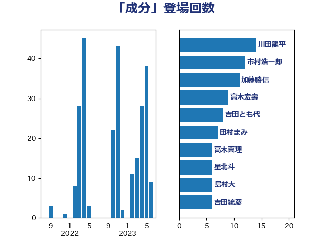

単語「成分」

| 川田龍平 | 立憲民主党 | 14 回 |
| 市村浩一郎 | 日本維新の会 | 12 回 |
| 加藤勝信 | 自由民主党 | 11 回 |
| 高木宏壽 | 自由民主党 | 9 回 |
| 吉田とも代 | 日本維新の会 | 8 回 |
| 田村まみ | 国民民主党 | 7 回 |
| 高木真理 | 立憲民主党 | 6 回 |
| 星北斗 | 自由民主党 | 6 回 |
| 島村大 | 自由民主党 | 6 回 |
| 吉田統彦 | 立憲民主党 | 6 回 |
| 伊藤孝江 | 公明党 | 6 回 |
| 伊佐進一 | 公明党 | 5 回 |
| 野村哲郎 | 自由民主党 | 4 回 |
| 緑川貴士 | 立憲民主党 | 4 回 |
| 本田顕子 | 自由民主党 | 4 回 |
| 若宮健嗣 | 自由民主党 | 3 回 |
| 河西宏一 | 公明党 | 3 回 |
| 後藤茂之 | 自由民主党 | 3 回 |
| 馬場雄基 | 立憲民主党 | 2 回 |
| 鈴木義弘 | 国民民主党 | 2 回 |
| 若松謙維 | 公明党 | 2 回 |
| 石井苗子 | 日本維新の会 | 2 回 |
| 田村貴昭 | 日本共産党 | 2 回 |
| 松原仁 | 立憲民主党 | 2 回 |
| 徳永エリ | 立憲民主党 | 2 回 |
| 岸田文雄 | 自由民主党 | 2 回 |
| 小野泰輔 | 日本維新の会 | 2 回 |
| 中島克仁 | 立憲民主党 | 2 回 |
| 須藤元気 | 無所属 | 1 回 |
| 青島健太 | 日本維新の会 | 1 回 |
| 長友慎治 | 国民民主党 | 1 回 |
| 鎌田さゆり | 立憲民主党 | 1 回 |
| 鈴木英敬 | 自由民主党 | 1 回 |
| 芳賀道也 | 国民民主党 | 1 回 |
| 福島みずほ | 社会民主党 | 1 回 |
| 神谷政幸 | 自由民主党 | 1 回 |
| 石垣のりこ | 立憲民主党 | 1 回 |
| 田中健 | 国民民主党 | 1 回 |
| 源馬謙太郎 | 立憲民主党 | 1 回 |
| 浜口誠 | 国民民主党 | 1 回 |
| 泉田裕彦 | 自由民主党 | 1 回 |
| 河野太郎 | 自由民主党 | 1 回 |
| 横沢高徳 | 立憲民主党 | 1 回 |
| 新妻秀規 | 公明党 | 1 回 |
| 斉藤鉄夫 | 公明党 | 1 回 |
| 平沼正二郎 | 自由民主党 | 1 回 |
| 平山佐知子 | 無所属 | 1 回 |
| 宮崎勝 | 公明党 | 1 回 |
| 安江伸夫 | 公明党 | 1 回 |
| 奥下剛光 | 日本維新の会 | 1 回 |
| 大河原まさこ | 立憲民主党 | 1 回 |
| 堤かなめ | 立憲民主党 | 1 回 |
| 吉田久美子 | 公明党 | 1 回 |
| 伊波洋一 | 無所属 | 1 回 |